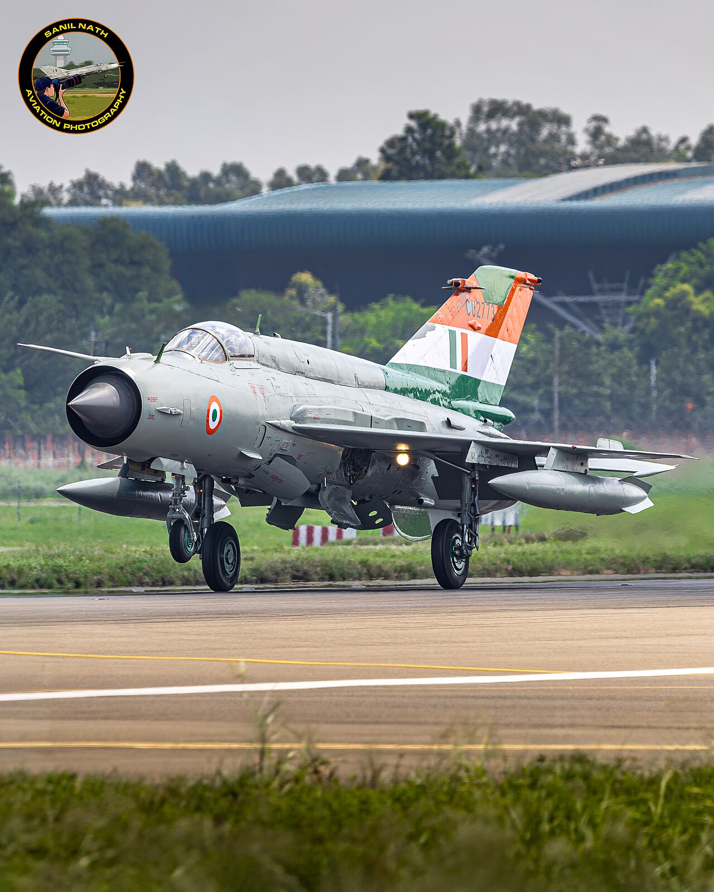

The Air Force
Wings of the Nation: The Modern Air Force

Whoever controls the sky controls the battlefield beneath it. The Indian Air Force (IAF) — one of the largest and most capable in the world — is the nation's shield and sword in the air, and a force my poetry returns to with particular affection.
My poem Wings of Vigilance, written for the Air Force's guardians, was singled out by the Chief of the Air Staff himself as catching "the spirit of our esteemed organisation."
A fleet of many feathers
The modern IAF flies a diverse fleet: the French-built Rafale, a formidable multi-role fighter inducted from 2020; the Russian-origin Su-30 MKI, the backbone of its strike power; and increasingly the indigenous HAL Tejas, a home-grown light combat aircraft that symbolises India's drive for self-reliance.[1]
Layered with airborne early-warning aircraft, mid-air refuellers, transport fleets and advanced air-defence systems, the IAF is built not just to fight, but to see, reach and sustain across a vast and varied geography — from desert to the highest mountains on earth.
Through storms, we carve the skies apart, guided by resolve, led by heart.
Command of the air

Air power has been decisive in India's recent history — from Operation Safed Sagar over Kargil, to the Balakot strike of 2019, to the operations of 2025. In each, the ability to strike precisely and deny the skies to the enemy shaped the outcome.
But hardware is only half the story. An air force is its airmen and airwomen — the pilots, the engineers, the air-traffic and radar crews, the commandos who guard the bases. Every sortie rests on thousands of unseen hands.
Guardians of the sky
What I tried to honour in Wings of Vigilance is the quiet vigilance behind the spectacle — the fact that the skies above a sleeping country are watched, every hour of every night, by people who ask for no applause. "Every step we take rewrites the air," the poem says, "where shadows dance, we are always there."
A jet streaking overhead is thrilling. But the deeper truth is the watch that never ends — the reason a hostile aircraft never reaches the city, and the citizen never has to know how close danger came. That is air power's greatest victory: the attack that never arrives.
Sources & further reading
All images via Wikimedia Commons, used under the licences shown in each caption.